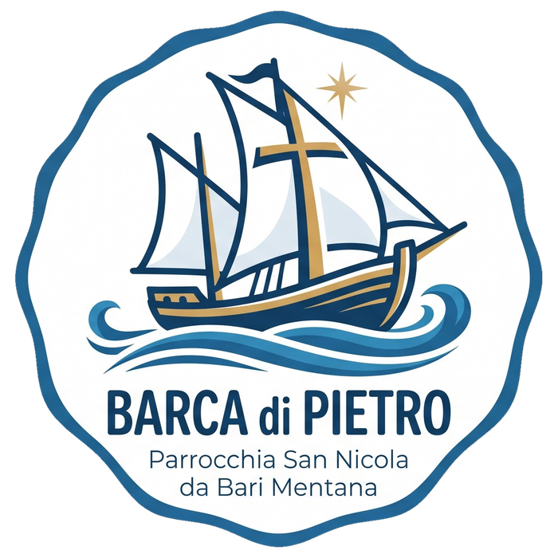

Stasera tutto è possibile
… dopo la Cresima!
In attesa della regia
Ecco le squadre in gara
🎲
Gioco
00:00
Come si gioca
—
—
🏆 Classifica
STASERA
TUTTO È
POSSIBILE
...dopo la Cresima!
Connessione persa — riconnessione…